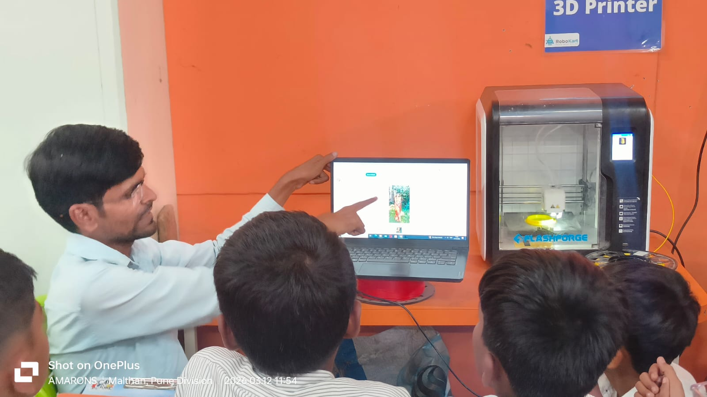
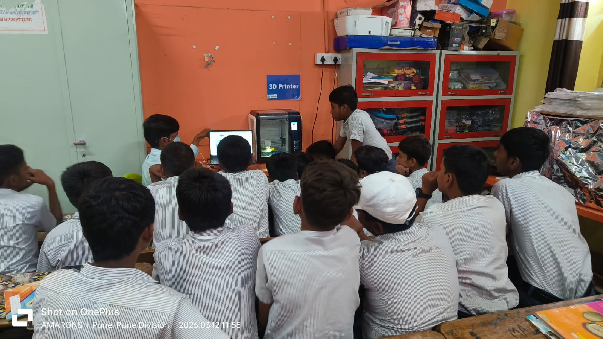
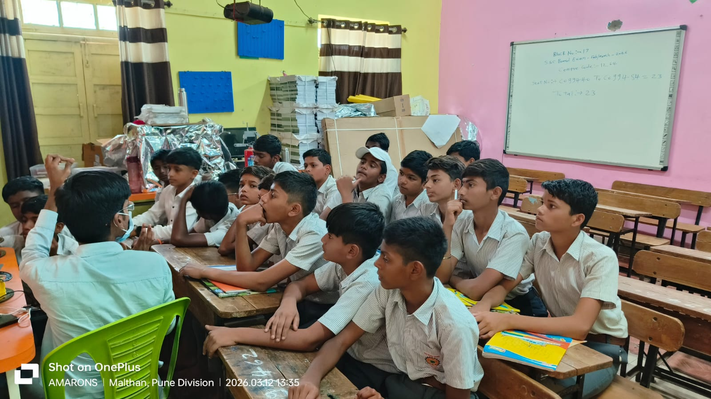
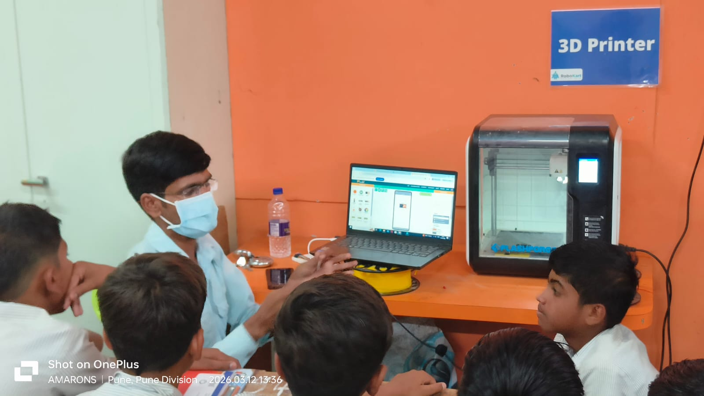

ATL शिक्षकांचे मनोगत

श्री. इचके एस. बी
B.sc.B.Ed
अटल टिंकरिंग लॅब मध्ये विद्यार्थ्यांना नविन तंत्रज्ञानाची ओळख करून दिली जाते. Arduino, Robotics, 3D Printing आणि Drone Technology यांचा वापर करून विद्यार्थ्यांची सर्जनशीलता वाढवली जाते.
अटल टिंकरिंग लॅब मध्ये विद्यार्थ्यांना नविन तंत्रज्ञानाची ओळख करून दिली जाते. Arduino, Robotics, 3D Printing आणि Drone Technology यांचा वापर करून विद्यार्थ्यांची सर्जनशीलता वाढवली जाते.

ATL लॅब मध्ये विद्यार्थ्यांना विविध तांत्रिक कौशल्ये शिकवली जातात. Arduino आणि Robotics प्रोजेक्टद्वारे विद्यार्थ्यांमध्ये संशोधनाची आवड निर्माण होते.





